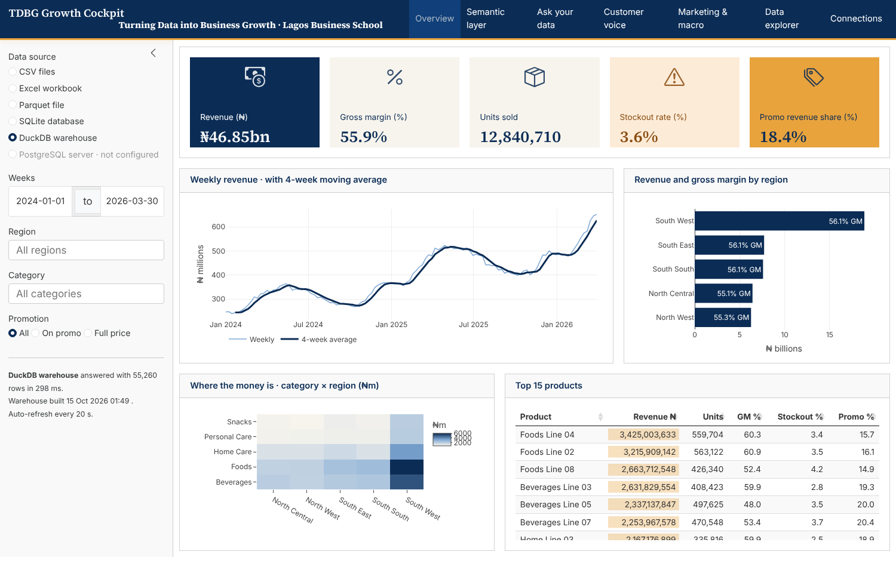
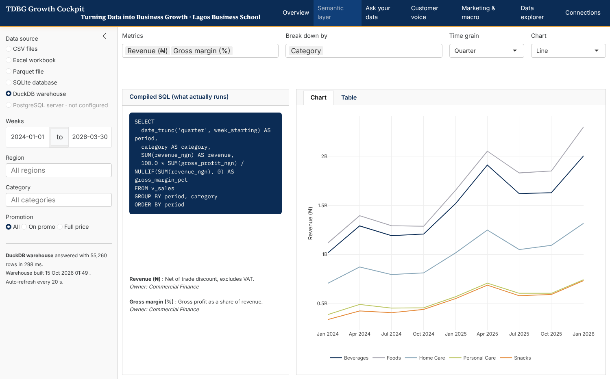
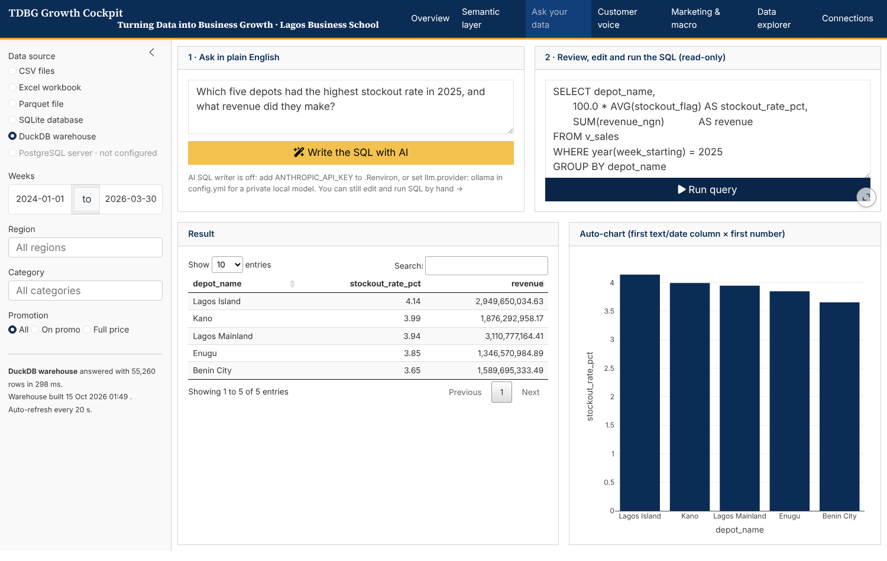
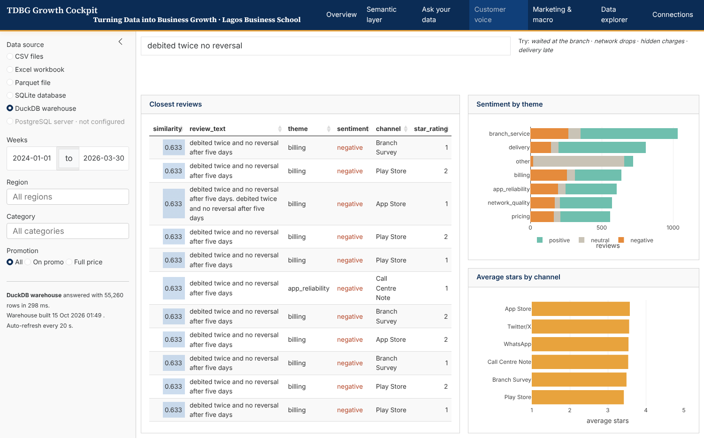
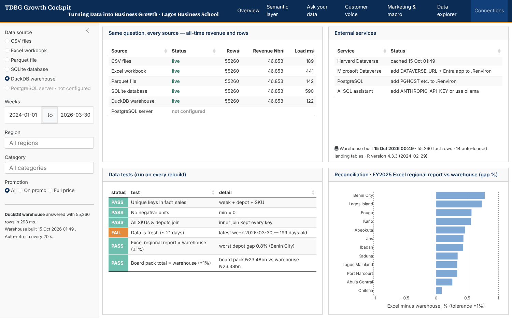

flowchart LR I1([input$source]) --> S[sales()] I2([input$dates]) --> F[filters() · debounced] I3([input$regions]) --> F F --> S W([warehouse file mtime<br/>reactivePoll]) --> S S --> K[KPI value boxes] S --> T[trend chart] S --> R[region chart] S --> P[top products table] W --> C[Connections page]
13 Dashboards with Quarto and Shiny
🟣 Advanced
| What | Interactive, governed dashboards built from the semantic layer, which refresh themselves when the warehouse is rebuilt |
| Why | The dashboard is where all the upstream work becomes a decision. If it is slow, confusing or untrusted, nothing upstream matters |
| When | Once gold, the gate and the semantic layer exist. Building a dashboard first is how organisations end up with 200 dashboards and no truth |
| Who | Analysts build. Business users co-design. Owners sign off the key performance indicators (KPIs) shown |
13.1 Three kinds of Quarto dashboard
| Kind | How it runs | Interactivity | Hosting | Choose when |
|---|---|---|---|---|
Static (format: dashboard) |
Rendered once to HyperText Markup Language (HTML) | Hover, zoom, client-side filters (plotly, DT, Observable) | Any web host, email, SharePoint | Daily or weekly snapshots; no server allowed |
Shiny (server: shiny) |
Live R session behind the page | Anything: re-query the warehouse, switch sources, write back | Posit Connect (Cloud), shinyapps.io, Docker | Exploration, operational monitoring, auto-refresh |
| Shinylive | R compiled to WebAssembly, running in the browser | Like Shiny, on data shipped with the page | Any static host | Teaching, public demos, small data, no server |
The Lab ships the same dashboard in two editions, both built from this book’s warehouse:
- Static edition (open it now). It runs entirely in your browser from small aggregated “cubes” exported from DuckDB, so it can sit on any web host behind a password. Its source is
static-dashboard/index.qmd. - Shiny edition (
02-dashboard.qmd). A live R session can switch between six data sources, re-query the warehouse, run the artificial intelligence (AI) Structured Query Language (SQL) assistant and refresh itself when the warehouse is rebuilt. Run it locally withquarto serve 02-dashboard.qmd, or see the platform page for the hosted version.
The anatomy of the Shiny edition:
13.2 Anatomy of a Quarto + Shiny dashboard
---
title: "TDBG Growth Cockpit"
format: dashboard # (1) dashboard layout: pages, rows, columns, cards
server: shiny # (2) a live R session powers the page
---
```{r}
#| context: setup # (3) runs once per app: helpers, semantic layer, filter choices
source("R/helpers.R")
```
# {.sidebar} # (4) a global sidebar: source picker + filters (inputs)
```{r}
radioButtons("source", "Data source", SOURCES)
dateRangeInput("dates", "Weeks", ...)
```
# Overview # (5) a page; "## Row" and "### Column" arrange cards
## Row {height=24%}
```{r}
uiOutput("kpis") # (6) placeholders for outputs
```
```{r}
#| context: server # (7) the reactive logic
warehouse_stamp <- reactivePoll(20000, session, checkFunc = function() file.mtime(db), valueFunc = ...)
sales <- reactive({ warehouse_stamp(); get_sales(input$source, filters()) }) # re-runs when inputs or warehouse change
output$kpis <- renderUI({ semantic_frame(sales(), c("revenue", "gross_margin_pct")) |> value_boxes() })
```13.3 How reactivity works
Shiny builds a dependency graph. Each output depends on the reactive values it reads. When an input or the warehouse file changes, only the outputs downstream of it recompute.
Performance rules that follow from the graph:
- Filter in the database, not in R.
get_sales()pushes the filters down as a SQLWHEREclause. - Debounce fast-changing inputs (
debounce(400)), so dragging a date slider doesn’t fire twenty queries. - Compute each expensive thing once in a
reactive()and share it. Never re-query inside each output. - Cache identical requests with
bindCache(input$source, filters()). - Open short-lived, read-only connections, so the nightly rebuild can swap the warehouse file while users are on the page.
13.4 The Lab dashboard, page by page

KPIs come from the semantic layer, so they mean the same thing whichever source is selected in the sidebar.
Users pick governed metrics and dimensions; the compiled SQL is shown alongside the chart.
Text-to-SQL with guardrails (Chapter 11): AI drafts, a human reviews, the query runs read-only.
Vector search over reviews, inside DuckDB.
The same question answered by every source, plus the test results: trust made visible.13.5 Design principles for decision dashboards
- One page, one decision. Name the decision at the top: “Where should we restock this week?”
- Read in a Z-pattern: KPIs (how are we doing?) → trend (which way?) → breakdown (where?) → detail (which ones?).
- Every KPI has a comparison: target, last period or last year. A number alone is trivia.
- Show definitions on hover, pulled from the semantic layer’s descriptions.
- Show freshness and test status. “Data to 30 Mar 2026 · 12/12 tests passed” builds more trust than any colour scheme.
- Accessible colour. Never rely on red and green alone; check contrast, and add labels.
- Fast or forgotten. Interactions should respond in under one second.
13.6 A static dashboard in 30 lines
When no server is allowed, a static Quarto dashboard rendered by the scheduler is often enough:
---
title: "Weekly Depot Pack"
format: dashboard
---
```{r}
source("R/kit.R"); con <- DBI::dbConnect(duckdb::duckdb(), "_platform/retail.duckdb", read_only = TRUE)
k <- DBI::dbGetQuery(con, "SELECT SUM(revenue_ngn) rev, AVG(stockout_flag) so FROM gold.fct_sales WHERE week_starting = (SELECT MAX(week_starting) FROM gold.fct_sales)")
```
## Row {height=25%}
```{r}
#| content: valuebox
#| title: "Revenue, latest week"
list(value = naira(k$rev, 1e6, "m"), icon = "cash-coin", color = "primary")
```
```{r}
#| content: valuebox
#| title: "Stockout rate"
list(value = scales::percent(k$so, .1), icon = "exclamation-triangle", color = "warning")
```
## Row
```{r}
#| title: Revenue by depot
plotly::plot_ly(DBI::dbGetQuery(con, "SELECT depot_name, SUM(revenue_ngn) r FROM gold.v_sales GROUP BY 1 ORDER BY 2"), x = ~r, y = ~depot_name, type = "bar")
```Schedule quarto render weekly_pack.qmd after refresh.R, and publish the HTML to SharePoint or Posit Connect.
13.7 🏋️ Exercises
E13.1 🟢 Run the Lab dashboard (quarto serve 02-dashboard.qmd). Switch the source between comma-separated values (CSV), SQLite and DuckDB. What changes, and what doesn’t? Why?
E13.2 🟡 Add a “vs last year” delta to each KPI value box in the Lab dashboard, computed through the semantic layer.
E13.3 🔴 Add a write-back feature: a table where regional managers enter next quarter’s revenue targets, saved to a targets table in PostgreSQL (or SQLite if no server), and shown as a target line on the trend chart. Where does that table sit in the architecture?
Solutions
E13.1. The row counts and load times change. The KPIs don’t, because every source is cleaned by the same rules and measured through the same semantic layer. (Parquet is the exception to watch: it was cleaned elsewhere, earlier.)
E13.2 sketch. Compute sf(metrics) for the selected dates and for the same dates shifted by 52 weeks, then pass p(sprintf("%+.1f%% vs LY", 100*(cur/ly-1))) into value_box().
E13.3. The targets table is a source: the write-back loop in Figure 1.1. The next pipeline run lands it in bronze, validates it in silver (one target per region per quarter, numeric, positive), and joins it in gold. The dashboard reads targets from gold, never directly from the form’s table.
13.8 ✅ Mastery check
- Static, Shiny or Shinylive? Pick one for a public teaching demo, a chief executive officer (CEO)’s daily cockpit, and a monthly emailed pack.
- What does
reactivePollwatch in the Lab dashboard, and why? - Name three performance rules and the problem each prevents.
13.9 🏢 In the organisation
Run a dashboard census every six months. List every dashboard, its owner, its users (from server logs) and whether it uses certified metrics. Retire anything with no users in 90 days. Fewer, trusted dashboards beat many contested ones.